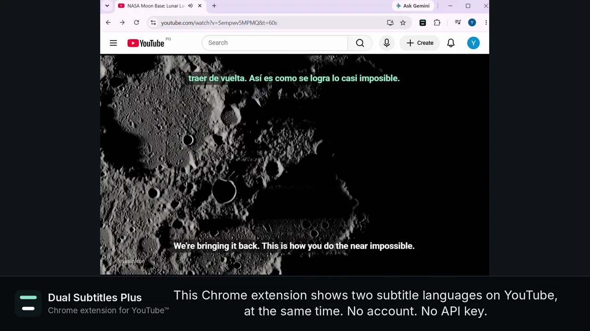
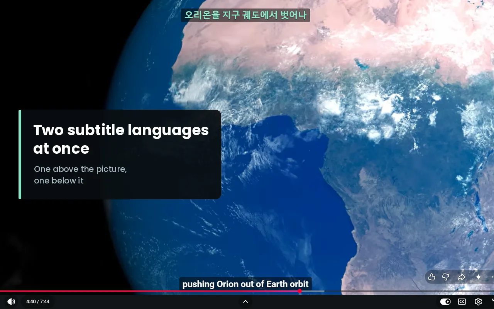
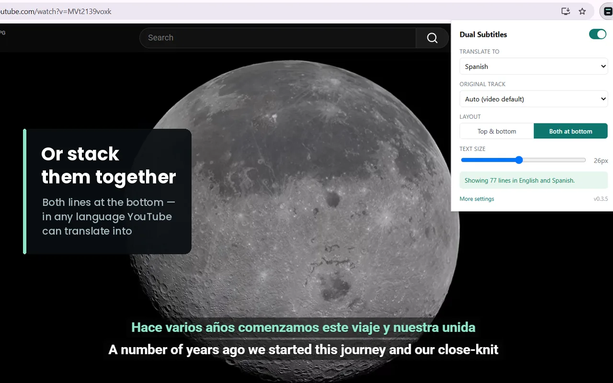
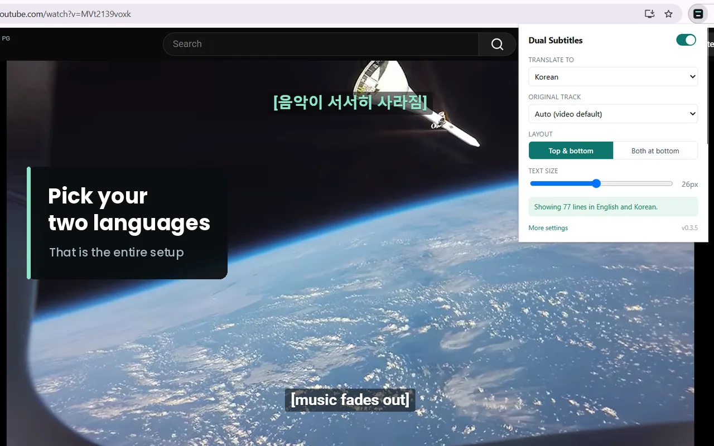

分开摆放：译文在画面上方，原文在下方；也可以把两行都放在底部。

外观可调：字号、原文与译文各自的颜色、背景不透明度，以及距底部的距离 —— 避免字幕被播放器控件遮挡。
功能
- 同时显示两行字幕 —— 视频自带的原文字幕，以及 YouTube 对它的翻译。
- 分开摆放：译文在画面上方，原文在下方；也可以把两行都放在底部。
- 外观可调：字号、原文与译文各自的颜色、背景不透明度，以及距底部的距离 —— 避免字幕被播放器控件遮挡。
- 记住你的语言、布局、字号和颜色。下一个视频依旧保持原样。
- 不改动 YouTube 自己的字幕，不会出现重影。
- 无需账号，无需 API 密钥，选好语言即可使用。
工作方式
字幕取自你正在观看的 YouTube 页面，翻译由 YouTube 完成。不向任何地方发送数据。没有服务器、没有统计分析、没有账号 —— 设置只保存在你的浏览器里。
请注意
- 视频需要有字幕才能使用。若没有字幕，扩展会明确提示，而不是默默失效。
- 翻译质量由 YouTube 决定。自动生成的字幕翻译准确度低于上传者手写的字幕。
- 适用于 youtube.com 的观看页面。
- 界面语言：中文（简体 / 繁體）、English、한국어、Português、Español、Türkçe、Tiếng Việt、日本語、Français、العربية。